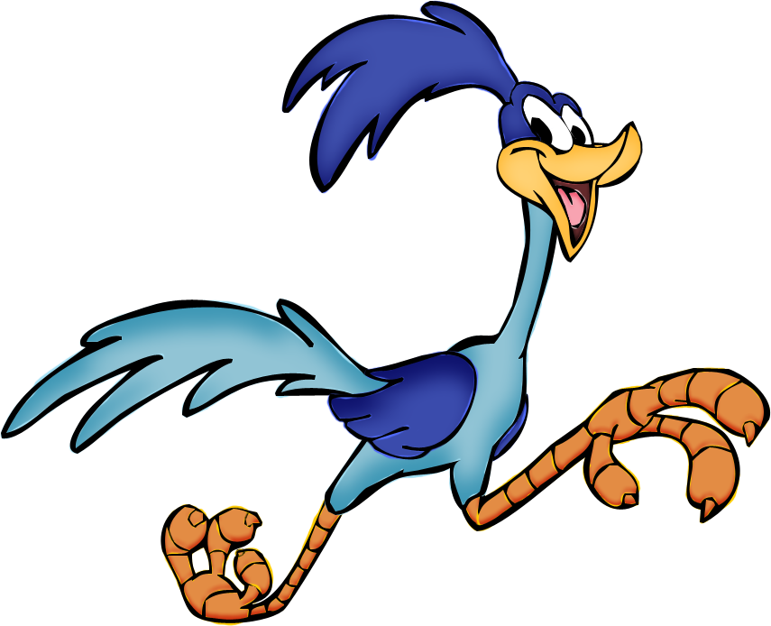

class: center, middle <img src="img/python.png" width="128" /> # Scientific Computing with Python ## David G. Daniel --- class: center, middle # Why Science? Why Math? --- class: center, middle --- # What is Scientific Computing Scientific Computing is concerned with constructing mathematical models and quantitative analysis techniques and using computers to analyze and solve scientific problems. --- class: center, middle # Life Tip <img src="img/smbc-for-science-1.gif" width="450" /> --- class: center, middle # (Just Don't Do This) [Saturday Morning Breakfast Cereal (SMBC)](http://www.smbc-comics.com/?id=1202) --- class: center, middle # But **Why?** --- class: center, middle # Examples (1/3) Remote Sensing and Meteorological Data Analysis --- class: center, middle # Examples (2/3) <img src="img/netflix.jpeg" width="450" /> --- class: center, middle # Examples (3/3) <a href="https://www.youtube.com/watch?v=CqSDWoAhvLU" target="_blank"> </a> --- # And Much More * Science makes our modern world go around, and without scientific computing, things we take for granted today would never exist. * Scientific Computing provides tools for analyzing the observable world around us, to come to conclusions and make our lives easier for us. --- # Scope of Discussion 1. Tools in Scientific Computing * NumPy * SciKit * OpenCV 2. Demo 3. More Demo --- class: center, middle --- # What is NumPy? NumPy is the fundamental package for scientific computing in Python. It is a Python library that provides a multidimensional array object, various derived objects (such as masked arrays and matrices). **Pronounced:** Num Pie  --- # What is NumPy? NumPy also comes with an assortment of routines for fast operations on arrays. These operations are 1. Mathematical 2. Logical 3. Shape manipulation 4. Sorting 5. Selecting 6. I/O 7. Discrete Fourier Transforms 8. Basic Linear Algebra 9. Basic statistical operations 10. Random simulation 11. much more. --- # Why NumPy? * NumPy is Open Source * NumPy has functions for common numerical tasks * NumPy is Highly Optimized * NumPy power Scientific Computing in Python --- # NumPy is Open Source **Numpy is licensed under the BSD license, enabling reuse with few restrictions.** ``` Copyright © 2005-2013, NumPy Developers. All rights reserved. Redistribution and use in source and binary forms, with or without modification, are permitted provided that the following conditions are met: Redistributions of source code must retain the above copyright notice, this list of conditions and the following disclaimer. Redistributions in binary form must reproduce the above copyright notice, this list of conditions and the following disclaimer in the documentation and/or other materials provided with the distribution. Neither the name of the NumPy Developers nor the names of any contributors may be used to endorse or promote products derived from this software without specific prior written permission. THIS SOFTWARE IS PROVIDED BY THE COPYRIGHT HOLDERS AND CONTRIBUTORS “AS IS” AND ANY EXPRESS OR IMPLIED WARRANTIES, INCLUDING, BUT NOT LIMITED TO, THE IMPLIED WARRANTIES OF MERCHANTABILITY AND FITNESS FOR A PARTICULAR PURPOSE ARE DISCLAIMED. IN NO EVENT SHALL THE COPYRIGHT OWNER OR CONTRIBUTORS BE LIABLE FOR ANY DIRECT, INDIRECT, INCIDENTAL, SPECIAL, EXEMPLARY, OR CONSEQUENTIAL DAMAGES (INCLUDING, BUT NOT LIMITED TO, PROCUREMENT OF SUBSTITUTE GOODS OR SERVICES; LOSS OF USE, DATA, OR PROFITS; OR BUSINESS INTERRUPTION) HOWEVER CAUSED AND ON ANY THEORY OF LIABILITY, WHETHER IN CONTRACT, STRICT LIABILITY, OR TORT (INCLUDING NEGLIGENCE OR OTHERWISE) ARISING IN ANY WAY OUT OF THE USE OF THIS SOFTWARE, EVEN IF ADVISED OF THE POSSIBILITY OF SUCH DAMAGE. ``` --- # NumPy Has Functions for Common Tasks As we had already mentioned, NumPy already comes with an assortment of routines to perform on data that you provide it. Here are some things that come out of the box. --- ## Mathematical Operations ```python # let's first import the library. import numpy as np # declare 2 arrays a = np.arange(10) b = np.array([1, 5, 2, 6, 3, 6, 8, 2, 5, 7]) # Adding a + b # Subtraction a - b # Multiplication a * b # Division a / b # Dot Product np.dot(a, b) # Cross Product np.cross(a, b.transpose()) ``` --- ## Logical Operations ### Truth value testing ```python # Test whether all array elements along a given axis evaluate to True. np.all() # Test whether any array element along a given axis evaluates to True. np.any() ``` --- ## Logical Operations ### Array contents ```python # Test element-wise for finiteness (not infinity or not Not a Number). np.isfinite() # Test element-wise for positive or negative infinity. np.isinf() # Test element-wise for NaN and return result as a boolean array. np.isnan() # Test element-wise for negative infinity, return result as bool array. np.isneginf() # Test element-wise for positive infinity, return result as bool array. np.isposinf() ``` --- ## Logical Operations ### Array type testing ```python # Returns a bool array, where True if input element is complex. np.iscomplex() # Check for a complex type or an array of complex numbers. np.iscomplexobj() # Returns True if array is arranged in Fortran-order in memory np.isfortran() # Returns a bool array, where True if input element is real. np.isreal() # Return True if x is a not complex type or an array of complex numbers. np.isrealobj() # Returns True if the type of num is a scalar type. np.isscalar() ``` --- ## Logical Operations ### Standard Logical operations ```python # Compute the truth value of x1 AND x2 element-wise. np.logical_and() # Compute the truth value of x1 OR x2 element-wise. np.logical_or() # Compute the truth value of NOT x element-wise. np.logical_not() # Compute the truth value of x1 XOR x2, element-wise. np.logical_xor() ``` --- ## Logical Operations ### Comparison ```python # Returns True if two arrays are element-wise equal within a tolerance. np.allclose() # Returns a boolean array where two arrays are element-wise equal within a # tolerance. np.isclose() # True if two arrays have the same shape and elements, False otherwise. np.array_equal() # Returns True if input arrays are shape consistent and all elements equal. np.array_equiv() ``` --- ## Logical Operations ### Comparison ```python # Return the truth value of (x1 > x2) element-wise. np.greater() # Return the truth value of (x1 >= x2) element-wise. np.greater_equal() # Return the truth value of (x1 < x2) element-wise. np.less() # Return the truth value of (x1 =< x2) element-wise. np.less_equal() # Return (x1 == x2) element-wise. np.equal() # Return (x1 != x2) element-wise. np.not_equal() ``` --- ## Shape Manipulations ### Basic operations ```python copyto() # Copies values from one array to another, broadcasting as necessary. ``` --- ## Shape Manipulations ### Changing array shape ```python # Gives a new shape to an array without changing its data. np.reshape() # Return a flattened array. np.ravel() # A 1-D iterator over the array. np.ndarray.flat # Return a copy of the array collapsed into one dimension. np.ndarray.flatten() ``` --- ## Shape Manipulations ### Transpose-like operations ```python # Roll the specified axis backwards, until it lies in a given position. np.rollaxis() # Interchange two axes of an array. np.swapaxes() # Same as self.transpose(), except that self is returned if self.ndim < 2. np.ndarray.T # Permute the dimensions of an array. np.transpose() ``` --- ## Shape Manipulations ### Changing number of dimensions ```python # Convert inputs to arrays with at least one dimension. np.atleast_1d(*arys ) # View inputs as arrays with at least two dimensions. np.atleast_2d(*arys ) # View inputs as arrays with at least three dimensions. np.atleast_3d(*arys ) # Produce an object that mimics broadcasting. np.broadcast broadcast_arrays(*arg) # Broadcast any number of arrays against each other. # Expand the shape of an array. np.expand_dims(a, ax) # Remove single-dimensional entries from the shape of an array. np.squeeze() ``` --- ## Shape Manipulations ### Changing kind of array ```python # Convert the input to an array. np.asarray() # Convert the input to an ndarray, but pass ndarray subclasses through. np.asanyarray() # Interpret the input as a matrix. np.asmatrix() # Return an array converted to a float type. np.asfarray() # Return an array laid out in Fortran order in memory. np.asfortranarray() # Convert an array of size 1 to its scalar equivalent. np.asscalar() # Return an ndarray of the provided type that satisfies requirements. np.require() ``` --- ## Shape Manipulations ### Joining arrays ```python # Stack 1-D arrays as columns into a 2-D array. np.column_stack() # Join a sequence of arrays together. np.concatenate() # Stack arrays in sequence depth wise (along third axis). np.dstack() # Stack arrays in sequence horizontally (column wise). np.hstack() # Stack arrays in sequence vertically (row wise). np.vstack() ``` --- ## Shape Manipulations ### Splitting arrays ```python # Split an array into multiple sub-arrays. np.array_split() # Split array into multiple sub-arrays along the 3rd axis (depth). np.dsplit() # Split an array into multiple sub-arrays horizontally (column-wise). np.hsplit() # Split an array into multiple sub-arrays. np.split() # Split an array into multiple sub-arrays vertically (row-wise). np.vsplit() ``` --- ## Shape Manipulations ### Tiling arrays ```python # Construct an array by repeating A the number of times given by reps. np.tile() # Repeat elements of an array. np.repeat() ``` --- ## Shape Manipulations ### Adding and removing elements ```python # Return a new array with sub-arrays along an axis deleted. np.delete() # Insert values along the given axis before the given indices. np.insert() # Append values to the end of an array. np.append() # Return a new array with the specified shape. np.resize() # Trim the leading and/or trailing zeros from a 1-D array or sequence. np.trim_zeros() # Find the unique elements of an array. np.unique() ``` --- ## Shape Manipulations ### Rearranging elements ```python # Flip array in the left/right direction. np.fliplr() # Flip array in the up/down direction. np.flipud() # Gives a new shape to an array without changing its data. np.reshape() # Roll array elements along a given axis. np.roll() # Rotate an array by 90 degrees in the counter-clockwise direction. np.rot90() ``` --- ## Sorting ### Basic Sorting ```python # Return a sorted copy of an array. sort() # Perform an indirect sort using a sequence of keys. lexsort() # Returns the indices that would sort an array. argsort() # Sort an array, in-place. ndarray.sort() # Return a copy of an array sorted along the first axis. msort() ``` --- ## Sorting ### Basic Sorting ```python # Sort a complex array using the real part first, then the imaginary part. sort_complex() # Return a partitioned copy of an array. partition() # Perform an indirect partition along the given axis using the # algorithm specified by the kind keyword. argpartition() ``` --- ## Sorting ### Searching ```python # Indices of the maximum values along an axis. argmax() # Return the indices of the maximum values in the specified axis ignoring nanargmax() # Return the indices of the minimum values along an axis. argmin() # Return the indices of the minimum values in the specified axis ignoring nanargmin() ``` --- ## Sorting ### Searching ```python # Find the indices of array elements that are non-zero, grouped by element. argwhere() # Return the indices of the elements that are non-zero. nonzero() # Return indices that are non-zero in the flattened version of a. flatnonzero() # Return elements, either from x or y, depending on condition. where() # Find indices where elements should be inserted to maintain order. searchsorted() # Return the elements of an array that satisfy some condition. extract() ``` --- ## Sorting ### Counting ```python # Counts the number of non-zero values in the array a. count_nonzero() ``` --- ## And Much More You get the idea. NumPy provides a rich library of functions 1. Mathematical 2. Logical 3. Shape manipulation 4. Sorting 5. Selecting 6. I/O 7. Discrete Fourier Transforms 8. Basic Linear Algebra 9. Basic statistical operations 10. Random simulation --- ## NumPy is Optimized for Numerical Computing. NumPy is very fast, compared to Python's Built-in data structures. Let's compare performance between python and python with NumPy **Python List** ```python %%timeit lst = range(1000000) [i+1 for i in lst] ``` **NumPy N-Dimensional Array (ndarray)** ```python %%timeit arr = np.arange(1000000) arr + 1 ``` --- class: center, middle # ... So let's recap ... --- class: center, middle # NumPy Arrays ```python arr = np.ndarray(...) ```  --- class: center, middle # Python Lists ```python lst = [...] ``` --- class: center, middle # NumPy Arrays ```python arr = np.ndarray(...) ``` --- class: center, middle # Python Lists ```python lst = [...] ``` --- # NumPy Powers Scientific Computing ## (In Python) * The SciPy Ecosystem * Sci-kit * OpenCV * More: https://wiki.python.org/moin/NumericAndScientific --- class: center, middle  --- class: center, middle # Let's Use NumPy --- ## Initialize Empty Array To initialize a NumPy array, we need to tell NumPy the dimensions of the array. ```python # 1x1 matrix a = np.ndarray([1]) # 2x2 matrix b = np.ndarray([2, 2]) # 3x3 matrix c = np.ndarray([3, 3]) ``` *OR* ```python a = np.empty([1]) b = np.empty([2, 2]) c = np.empty([3, 3]) ``` --- ## Initialize Array of Zeros ```python # 1x1 matrix a = np.zeros([1]) # 2x2 matrix b = np.zeros([2, 2]) # 3x3 matrix c = np.zeros([3, 3]) ``` --- ## Initialize Array of Ones ```python # 1x1 matrix a = np.ones([1]) # 2x2 matrix b = np.ones([2, 2]) # 3x3 matrix c = np.ones([3, 3]) ``` --- ## Initialize Identity Matrices ```python # 1x1 matrix a = np.identity(1) # 2x2 matrix b = np.identity(2) # 3x3 matrix c = np.identity(3) ``` --- # NumPy Data Types What makes NumPy fast is the fact that NumPy arrays are typically a single data type The following are NumPy's built-in data types. | DataType | Description | |:----------------|:-----------------------------------------------------------------------------------| | bool_ | Boolean (True or False) stored as a byte | | int_ | Default integer type (same as C long; normally either int64 or int32) | | intc | Identical to C int (normally int32 or int64) | | intp | Integer used for indexing (same as C ssize_t; normally either int32 or int64) | | int8 | Byte (-128 to 127) | | int16 | Integer (-32768 to 32767) | | int32 | Integer (-2147483648 to 2147483647) | | int64 | Integer (-9223372036854775808 to 9223372036854775807) | --- # NumPy Data Types | DataType | Description | |:----------------|:-----------------------------------------------------------------------------------| | uint8 | Unsigned integer (0 to 255) | | uint16 | Unsigned integer (0 to 65535) | | uint32 | Unsigned integer (0 to 4294967295) | | uint64 | Unsigned integer (0 to 18446744073709551615) | | float_ | Shorthand for float64. | | float16 | Half precision float: sign bit, 5 bits exponent, 10 bits mantissa | | float32 | Single precision float: sign bit, 8 bits exponent, 23 bits mantissa | | float64 | Double precision float: sign bit, 11 bits exponent, 52 bits mantissa | | complex_ | Shorthand for complex128. | | complex64 | Complex number, represented by two 32-bit floats (real and imaginary components) | | complex128 | Complex number, represented by two 64-bit floats (real and imaginary components | **More Info:** http://docs.scipy.org/doc/NumPy/user/basics.types.html --- # NumPy Data Types ```python # initialize int16 data type to hold the value "13" x = np.int16(13) # initialize int64/int32 data type to hold the array [1, 2, 4] y = np.int_([1,2,4]) ``` --- class: center, middle <img src="img/numpy.png" /> # Demo **Source:** https://github.com/spartanem/python-for-researchers/ --- class: center, middle <img src="img/matplotlib-logo.svg" /> **NumPy is Cool but let's make it Cooler** --- # What is Matplotlib? * matplotlib is a python 2D plotting library which produces publication quality figures in a variety of hardcopy formats and interactive environments across platforms. * matplotlib can be used in python scripts, the python and ipython shell web application servers, and six graphical user interface toolkits. --- class: center, middle # ... Let's see what we can do ... --- # Simple Plot ```python from pylab import * t = arange(0.0, 2.0, 0.01) s = sin(2*pi*t) plot(t, s) xlabel('time (s)') ylabel('voltage (mV)') title('About as simple as it gets, folks') grid(True) savefig("test.png") show() ``` --- # Subplot ```python import numpy as np import matplotlib.pyplot as plt x1 = np.linspace(0.0, 5.0) x2 = np.linspace(0.0, 2.0) y1 = np.cos(2 * np.pi * x1) * np.exp(-x1) y2 = np.cos(2 * np.pi * x2) plt.subplot(2, 1, 1) plt.plot(x1, y1, 'yo-') plt.title('A tale of 2 subplots') plt.ylabel('Damped oscillation') plt.subplot(2, 1, 2) plt.plot(x2, y2, 'r.-') plt.xlabel('time (s)') plt.ylabel('Undamped') plt.show() ``` --- # Pie Chart ```python import matplotlib.pyplot as plt # The slices will be ordered and plotted counter-clockwise. labels = 'Frogs', 'Hogs', 'Dogs', 'Logs' sizes = [15, 30, 45, 10] colors = ['yellowgreen', 'gold', 'lightskyblue', 'lightcoral'] explode = (0, 0.1, 0, 0) # only "explode" the 2nd slice (i.e. 'Hogs') plt.pie(sizes, explode=explode, labels=labels, colors=colors, autopct='%1.1f%%', shadow=True, startangle=90) # Set aspect ratio to be equal so that pie is drawn as a circle. plt.axis('equal') plt.show() ``` --- class: center, middle # Stock Data ## Let's see a slightly more complicated, but interesting --- # XKCD (http://xkcd.com/418/) ```python import matplotlib.pyplot as plt import numpy as np with plt.xkcd(): fig = plt.figure() ax = fig.add_axes((0.1, 0.2, 0.8, 0.7)) ax.spines['right'].set_color('none') ax.spines['top'].set_color('none') plt.xticks([]) plt.yticks([]) ax.set_ylim([-30, 10]) data = np.ones(100) data[70:] -= np.arange(30) plt.annotate( 'THE DAY I REALIZED\nI COULD COOK BACON\nWHENEVER I WANTED', xy=(70, 1), arrowprops=dict(arrowstyle='->'), xytext=(15, -10)) plt.plot(data) plt.xlabel('time') plt.ylabel('my overall health') fig.text(0.5, 0.05, '"Stove Ownership" from xkcd by Randall Monroe', ha='center') plt.show() ``` --- class: center, middle # Machine Learning --- class: center, middle # What is Machine Learning ## Different Meanings Depending on Who You Ask --- # Arthur Samuel (1969) Arthur Lee Samuel was an American pioneer in the field of computer gaming and artificial intelligence. ## A field of study that gives computers the ability to learn without being explicitly programmed. --- # Tom Mitchel (1998) Tom Michael Mitchell (born 9 August 1951) is an American computer scientist and E. Fredkin University Professor at the Carnegie Mellon University (CMU). He is currently the Chair of Machine Learning Department at CMU. ## A well posed learning program: A computer program is said to learn from experience E, with respect to some tast T, and some performance measure P, if its performance on T, as measured by P improves with experience E. --- # Types of Learning 1. **Unsupervised Learning** * K-Means Clustering 2. **Supervised Learning** * Facial Detection 3. **Reinforcement Learning** 4. **Recommender Systems** --- class: center, middle --- # K-Means Clustering K-means clustering is a method of vector quantization, originally from signal processing, that is popular for cluster analysis in data mining. k-means clustering aims to partition n observations into k clusters in which each observation belongs to the cluster with the nearest mean, serving as a prototype of the cluster. --- # K-Means Clustering ```python from sklearn.cluster import KMeans import matplotlib.pyplot as plt import argparse import numpy as np import cv2 def centroid_histogram(clt): # grab the number of different clusters and create a histogram # based on the number of pixels assigned to each cluster numLabels = len(np.unique(clt.labels_)) numLabels = np.arange(0, numLabels + 1) (hist, _) = np.histogram(clt.labels_, bins = numLabels) # normalize the histogram, such that it sums to one hist = hist.astype("float") hist /= hist.sum() # return the histogram return hist ``` --- # K-Means Clustering ```python def plot_colors(hist, centroids): # initialize the bar chart representing the relative frequency # of each of the colors bar = np.zeros((50, 300, 3), dtype = "uint8") startX = 0 # loop over the percentage of each cluster and the color of # each cluster for (percent, color) in zip(hist, centroids): # plot the relative percentage of each cluster endX = startX + (percent * 300) cv2.rectangle(bar, (int(startX), 0), (int(endX), 50), color.astype("uint8").tolist(), -1) startX = endX # return the bar chart return bar ``` --- # K-Means Clustering ```python # construct the argument parser and parse the arguments ap = argparse.ArgumentParser() ap.add_argument("-i", "--image", required = True, help = "Path to the image") ap.add_argument("-c", "--clusters", required = True, type = int, help = "# of clusters") args = vars(ap.parse_args()) # load the image and convert it from BGR to RGB so that # we can dispaly it with matplotlib image = cv2.imread(args["image"]) image = cv2.cvtColor(image, cv2.COLOR_BGR2RGB) # show our image plt.figure() plt.axis("off") plt.imshow(image) ``` --- # K-Means Clustering ```python # reshape the image to be a list of pixels image = image.reshape((image.shape[0] * image.shape[1], 3)) # cluster the pixel intensities clt = KMeans(n_clusters = args["clusters"]) clt.fit(image) # build a histogram of clusters and then create a figure # representing the number of pixels labeled to each color hist = centroid_histogram(clt) bar = plot_colors(hist, clt.cluster_centers_) # show our color bart plt.figure() plt.axis("off") plt.imshow(bar) plt.show() ``` --- class: center, middle --- # OpenCV * OpenCV is a library of programming functions mainly aimed at real-time computer vision, developed by Intel Russia research center in Nizhny Novgorod, and now supported by Willow Garage and Itseez. * Built originally with C, then revised in C++ * Officially supported interfaces in C++, Python and Java * Available on: - Windows - Mac - Linux - iOS - Android --- # OpenCV ## Applications * 2D and 3D feature toolkits * Egomotion estimation * Facial recognition system * Gesture recognition * Human–computer interaction (HCI) * Mobile robotics * Motion understanding * Object identification * Segmentation and Recognition * Stereopsis Stereo vision: depth perception from 2 cameras * Structure from motion (SFM) * Motion tracking * Augmented reality --- # OpenCV ## Machine Learning Support * Boosting (meta-algorithm) * Decision tree learning * Gradient boosting trees * Expectation-maximization algorithm * k-nearest neighbor algorithm * Naive Bayes classifier * Artificial neural networks * Random forest * Support vector machine (SVM) --- # OpenCV ## Facial Recognition OpenCV comes with built-in support for object detection for 2 algorithms * Haar Cascade * HOG (Histogram of Gradients) Descriptors --- class: center, middle # OpenCV ## Haar Cascade --- class: center, middle # OpenCV ## HOG (Histogram of Gradients) Descriptors <img src="img/hog-descriptor.png" width="450"/> --- class: center, middle # Facial Detection Let's create a Facial Detection Application with OpenCV --- ## Haar Cascade ```python import cv2 cam = cv2.VideoCapture(0) s, img = cam.read() face_cascade = cv2.CascadeClassifier('haar/haarcascade.xml') eye_cascade = cv2.CascadeClassifier('haar/haarcascade_eye.xml') cv2.namedWindow("Face Detection", cv2.CV_WINDOW_AUTOSIZE) while s: cv2.imshow( winName,img ) s, img = cam.read() ## detect face on image gray = cv2.cvtColor(img, cv2.COLOR_BGR2GRAY) faces = face_cascade.detectMultiScale(gray, 1.3, 5) for (x,y,w,h) in faces: cv2.rectangle(img,(x,y),(x+w,y+h),(255,0,0),2) roi_gray = gray[y:y+h, x:x+w] roi_color = img[y:y+h, x:x+w] eyes = eye_cascade.detectMultiScale(roi_gray) for (ex,ey,ew,eh) in eyes: cv2.rectangle(roi_color,(ex,ey),(ex+ew,ey+eh),(0,255,0),2) # check for ESC key press, and stop when the user requests it key = cv2.waitKey(10) if key == 27: cv2.destroyWindow(winName) break ``` --- # HOG Descriptor ## How it Works ```python import matplotlib.pyplot as plt from skimage.feature import hog from skimage import data, color, exposure image = color.rgb2gray(data.lena()) fd, hog_image = hog(image, orientations=8, pixels_per_cell=(16, 16), cells_per_block=(1, 1), visualise=True) fig, (ax1, ax2) = plt.subplots(1, 2, figsize=(8, 4)) ax1.axis('off') ax1.imshow(image, cmap=plt.cm.gray) ax1.set_title('Input image') # Rescale histogram for better display hog_image_rescaled = exposure.rescale_intensity(hog_image, in_range=(0, 0.02)) ax2.axis('off') ax2.imshow(hog_image_rescaled, cmap=plt.cm.gray) ax2.set_title('Histogram of Oriented Gradients') plt.show() ``` --- class: center, middle # HOG Descriptor ## Body Detection --- class: center, middle # So you like Scientific Computing. ## **What's Next?** --- # What's Next 1. Become Better at **NumPy** * NumPy Book: http://csc.ucdavis.edu/~chaos/courses/nlp/Software/NumPyBook.pdf * Excellent Official Docs: http://docs.scipy.org/doc/numpy/index.html 2. Explore **SciPy** with **NumPy** * SciPy Cookbook: http://wiki.scipy.org/Cookbook 3. Learn Machine Learning with **SciKit Learn** * Official Docs: http://scikit-learn.org/stable/documentation.html 4. Check out **OpenCV** * Offical Docs: http://docs.opencv.org/ * Checkout the Books: http://amzn.to/1iDG1DQ --- class: center, middle # What's Next ## Share with Us! Let us know what you want to explore and we will make future meetups focussed on that --- class: center, middle # Questions ## Don't Be Shy --- class: center, middle # Thank You ## Follow Me @davydany ## www.davydany.com